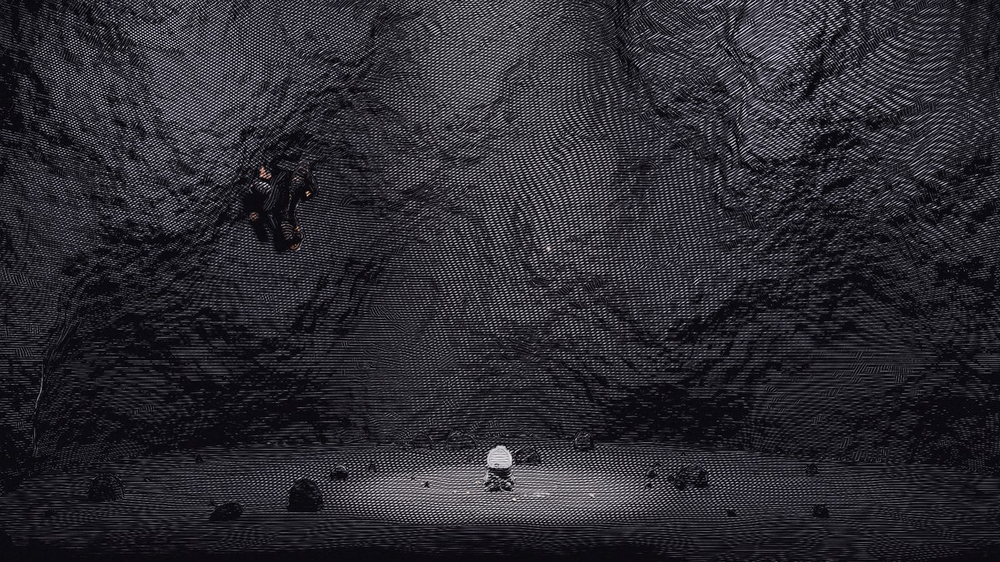
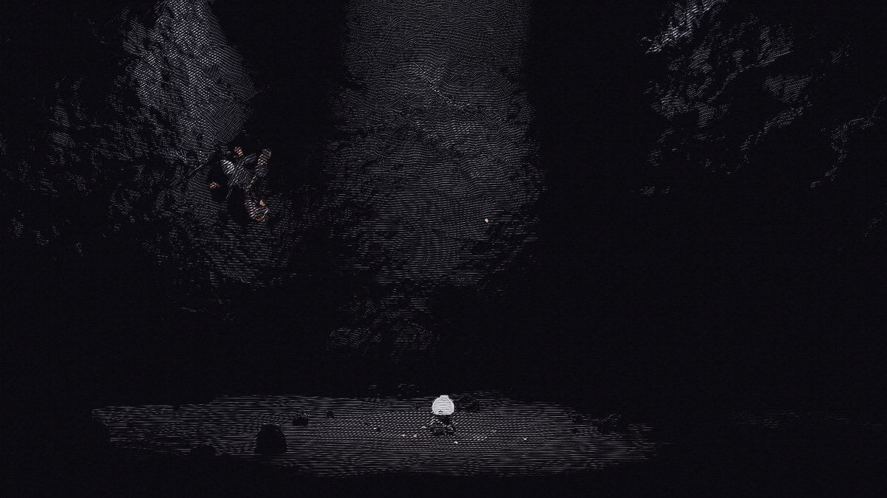
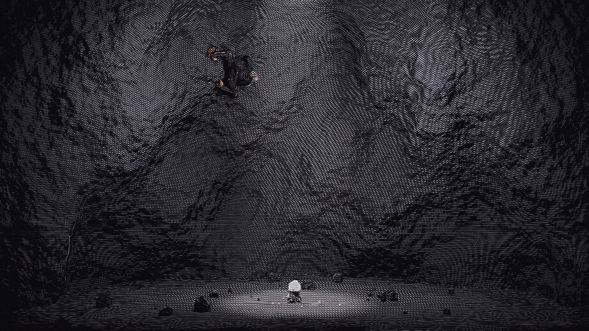
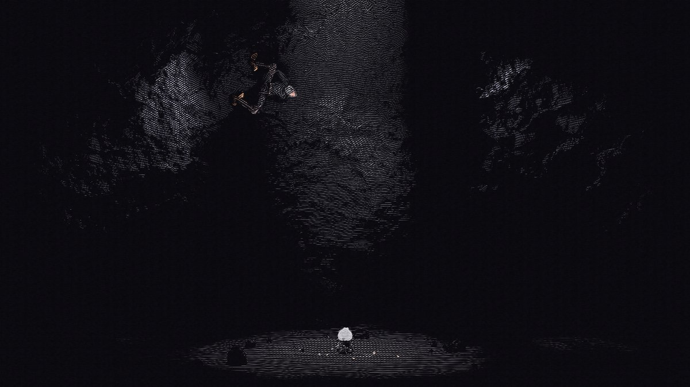

The film after the bitten ending’s titles is darker now. The wall behind the doll used to read as one smooth draped sheet; now it is broken rock, in beds and blocks, with fallen stones at its foot, and only a little light reaches it, so you can barely make it out. The light from the well no longer looks like a spotlight: it fades out softly round the doll.
The cave
Make the 26-second cutscene darker and the wall behind the doll more interesting, it is too smooth now, it should be rocks in the cave. The walls should be much darker, basically they should be barely seeable.
It should not be such an obvious spotlight from top, make it softer and edges more blurred
The whole film, 26.5 seconds, with sound


BeforeAfter
Drag the thread to compare
Halfway through: the thing on the left wall, the doll in the light


BeforeAfter
Drag the thread to compare
Near the end, when the camera has gone back and the light is already less
Beds of rock. The wall is built up of layers that tilt and pinch out. Each one juts a little over the one below and breaks off at its lip, and upright joints split the layers into blocks. Cracked faces and fine grit go over that.
Fallen blocks lie at the foot of the wall, away from where the thing crawls.
Much less light on the walls. The rock itself is darker, and the light that used to wash the walls is down to about a quarter. What’s left comes from above and grazes down the rock: the tops of the ledges catch it and everything under them stays black. In the engraving, rock that gets no light gets no lines, so most of the cave is simply dark.
The thing is only just there. A faint light goes with it, so you can make out its shape on the rock but not much more.
No spotlight. The light that comes down the well falls off gradually from the doll outward, from a source as wide as the opening, so there’s no bright disc with a hard rim on the floor any more. The light that picks out the doll from the front is spread the same way.
The light from the well is now a soft round shaft. Before, it filled a box with hard sides, which showed once the walls behind it went dark.
The crawl on broken rock. On rock this rough a hold can be out of reach, so now the body leans toward a hand that has to stretch. Along its route the rock is half as broken (a way worn by its hands), and its body rides 2 cm lower.
Checked
Before
After
Wall brightness, 0 to 255
46.6
16.1
Hand or foot sliding
under 1 mm
0 mm
Hand short of its hold
2 mm
0 mm
Body nearest the rock
–
24 mm clear
Flicker, worst frame
9.2
5.8
Sound against movement
0.0 ms
0.0 ms
Where it lives
The filmapp/assets/cine/names.mp4
The cave, light and crawlscripts/cine/shots_end.py (N1, Crawler.set)